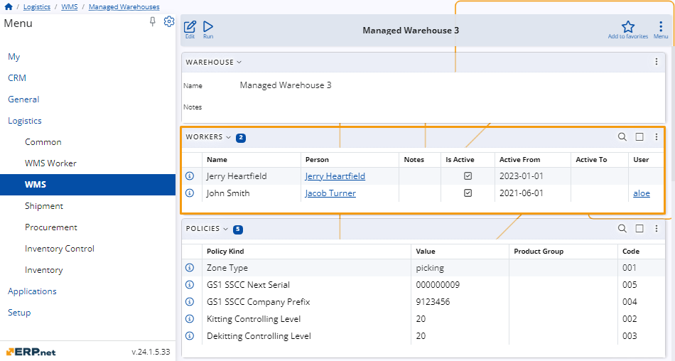
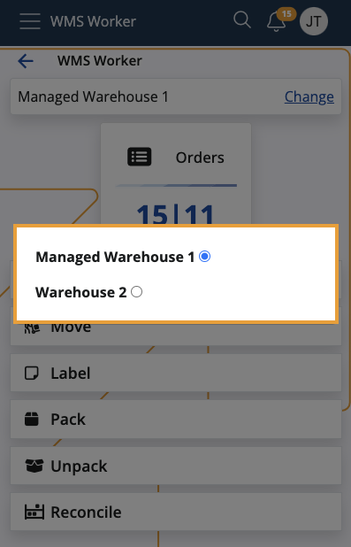

Warehouse workers
Warehouse workers are human or robot workers who can execute warehouse tasks.
They reside in the Workers panel of the respective managed warehouse, where you can view and modify their records.

Worker details
Within the panel, you can find the following information about every worker:
Name - The worker's full name.
Person - The person representing the worker, as specified in the worker's User definition. If a User is not set, this field will be NULL, which means that the worker's identity may be unknown or they might be a non-person entity.
Notes - Additional information or special instructions related to the worker's role and responsibilities.
Is Active - Specifies whether the worker is active and capable of executing tasks.
Active From - The date the worker's record became active in the warehouse. This helps in tracking the duration of the worker's service.
Active To - The termination date of the worker's activity in the warehouse. This can be NULL for workers who are still active and have not been terminated previously.
User - Refers to the user account associated with the worker. This applies only to internal and virtual users.
WMS Worker app access
One and the same user may be assigned to multiple warehouses.
The WMS Worker app determines which warehouses to show to the currently logged-in worker based on the User they're associated with.
In other words, workers will only have access to those warehouses where their user accounts are added.
